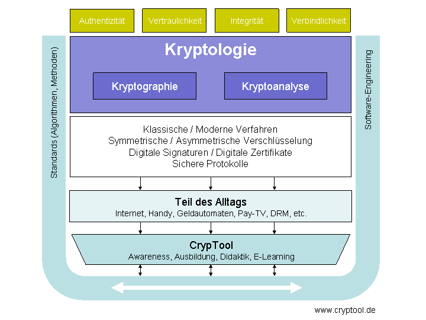
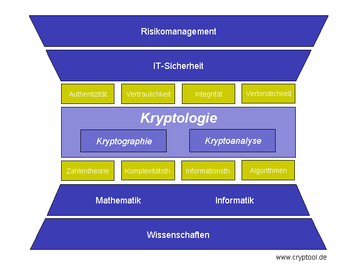

In CrypTool sind klassische und moderne Verfahren der Kryptographie und Kryptoanalyse implementiert und über eine grafische Oberfläche einfach abrufbar, so dass Sie diese Verfahren selbst spielerisch durchführen können. Dadurch erhalten Sie einen schnellen Einstieg und ein besseres Verständnis für die Möglichkeiten und Grenzen kryptographischer Verfahren.
Die erste Grafik zeigt eine Übersicht über die Ziele und Komponenten der Kryptologie und wie CrypTool dies unterstützt.

Die zweite Grafik zeigt, wie sich Kryptologie sowohl aus Unternehmens- und Behördensicht als auch aus der Sicht der Wissenschaft in die übergeordneten Zusammenhänge IT-Sicherheit, Risikomanagement sowie Mathematik und Informatik einordnet.
Ein Grundverständnis für Kryptologie ist notwendig, um geeignete Maßnahmen und Kontrollen zu ergreifen, so dass die Ziele der IT-Sicherheit (Authentizität, Vertraulichkeit, Integrität, Verbindlichkeit) in einem möglichst optimalen Kosten-/Nutzenverhältnis erreicht werden.

IT-Sicherheit beschreibt ein Feld umfassender Tätigkeiten, die den Einsatz von IT-Systemen mit Sicherheitsmaßnahmen unterstützen, um Unternehmen, Kunden und externen Partnern einen möglichst hohen Schutz der elektronischen Informationen zu bieten. Das Ziel besteht darin, Informationen und Prozesse zu schützen sowie IT-bezogene Beeinträchtigungen der Geschäftstätigkeiten weitestgehend auszuschließen.
Zu den Maßnahmen der IT-Sicherheit gehören neben den Verfahren, die die Kryptologie bietet, z.B. Sicherheitsorganisation, rechtliche Aspekte, Monitoring, Antivirenschutz, Patchmanagement, Desaster Recovery, Business Continuity, Sicherheitsarchitekturen und Awareness für IT-Sicherheit. Einen guten Überblick über diese Maßnahmen bietet das Grundschutzhandbuch (GSHB) des Bundesamtes für Sicherheit in der Informationstechnik (BSI) (http://www.bsi.bund.de/).
Noch eine Ebene über der IT-Sicherheit liegt das Risikomanagement, das sich bis zum gesellschaftlich wünschenswerten Schutz kritischer Infrastrukturen erstreckt.
Unter Risikomanagement versteht man den planvollen und bewussten Umgang mit Risiken. Dabei kann es sich um allgemeine unternehmerische Risiken handeln oder beispielsweise um spezielle finanzielle Risiken.
Unternehmen, Organisationen und Individuen mussten seit Menschengedenken Risiken aller Art bewältigen. Die Ursprünge des systematischen Risikomanagements liegen im Finanzwesen. Heutzutage tragen auch das Gesetz zur Kontrolle und Transparenz im Unternehmensbereich (KonTraG), der Sarbanes-Oxley Act und der Fragenkatalog von Basel II dazu bei.
Man kann das betriebswirtschaftliche Gesamtrisiko unterteilten in operative Risiken (z.B. durch Ausfälle oder Einschränkung der IT) und Finanzrisiken jeder Art (Kreditrisiko, Liquiditätsrisiko, Marktrisiko, Haftungsrisiko, …).
Für Identifikation, Messung und Monitoring von Risiken und für die Risikosteuerung gibt es unterschiedliche Herangehensweisen.
Risikomanagement strebt nicht unbedingt die 100%-ige Vermeidung von Risiken an, sondern ein angemessenes Verhalten unter Kosten-/Nutzengesichtspunkten (angemessene und geeignete Maßnahmen können deshalb z.B. auch die Versicherung eines Risikos sein).
Quellen: